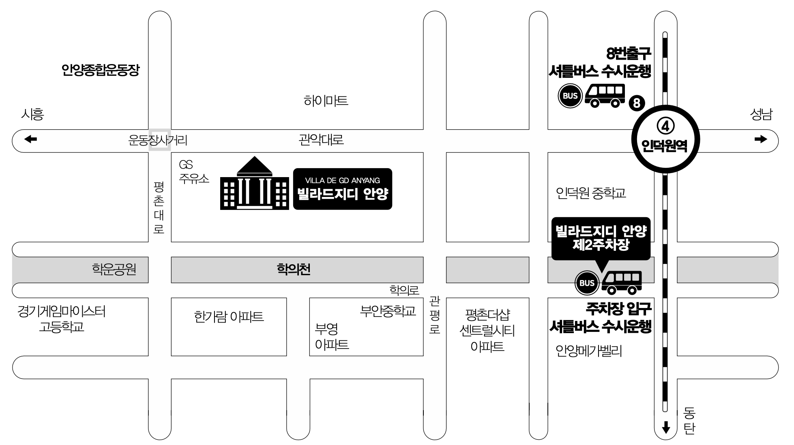

Invitation
7번의 해가 바뀌는 동안
서로의 곁을 지켜 온 두 사람이
지금처럼 서로를 아끼고 사랑하며
평생을 함께 걸어가려 합니다.
소중한 걸음으로 함께해 주시어
저희의 앞날을 따뜻하게
축복해 주신다면 감사하겠습니다.
신랑 김영빈김현태 · 김길래의 아들
신부 장하연장보영 · 김숙희의 딸
SAVE THE DATE
우리, 결혼합니다.
12 / 12
2026년 12월 12일 토요일 오후 2시 40분
DEC 2026
빌라드지디 안양
3층 크리스탈캐슬홀
DAYSHOURMINSEC
77:00:00:00
영빈 하연의 결혼식까지 D-77
함께 보낸 소중한 날
+ 0일
MOMENTS OF US
우리의 순간들
함께라서 더 빛나는, 보통의 날들.
COME CELEBRATE WITH US
오시는 길
빌라드지디 안양
경기 안양시 동안구 관악대로 254

빌라드지디 안양
경기 안양시 동안구 관악대로 254
제2주차장
안양시 동안구 관양동 791-10
자가용 이용 시
원활한 주차를 위해 제2주차장 이용을 권장드립니다.
제2주차장에 직접 주차하실 경우
차량 1대당 1만 원 주유권 1매를 드립니다.
주차 후 입구 앞 셔틀버스를 이용해 주세요.
예식장까지 약 5분 소요됩니다.
제2주차장 주소안양시 동안구 관양동 791-10
빌라드지디 안양으로 방문하실 경우
발렛 서비스를 통해 제2주차장에 주차해 드립니다.
버스 이용 시
종합운동장 정류장 하차
일반8, 8-1, 9, 11-2, 11-3, 51, 60, 80
간선541
지하철 이용 시
4호선 인덕원역 8번 출구
셔틀버스 수시 운행
THANK YOU, ALWAYS
마음 전하실 곳
멀리서도 보내주시는 따뜻한 마음,
감사히 간직하겠습니다.
신랑측 계좌번호 +
김영빈
국민은행 700102-01-141000
김현태
국민은행 004 01 0475 964
김길래
농협 211031-56-071249
신부측 계좌번호 +
장하연
신한은행 110-383-580501
장보영
기업은행 01023889856